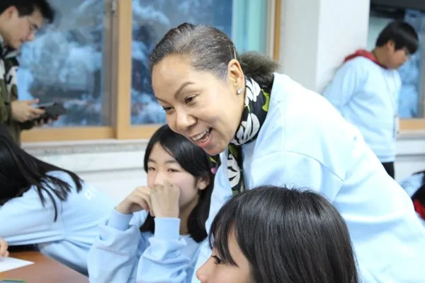
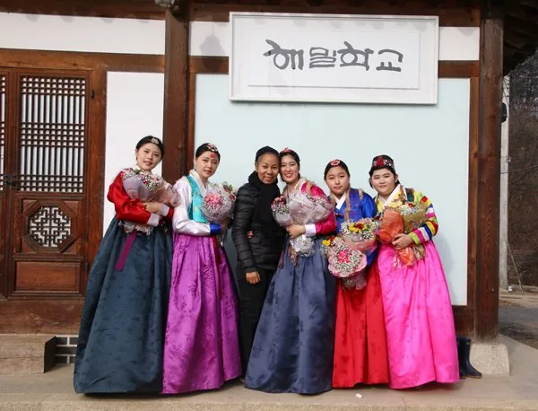
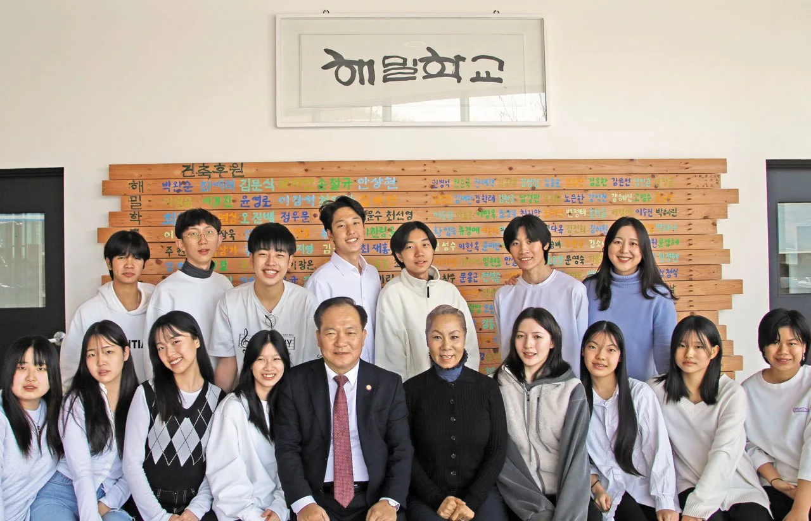
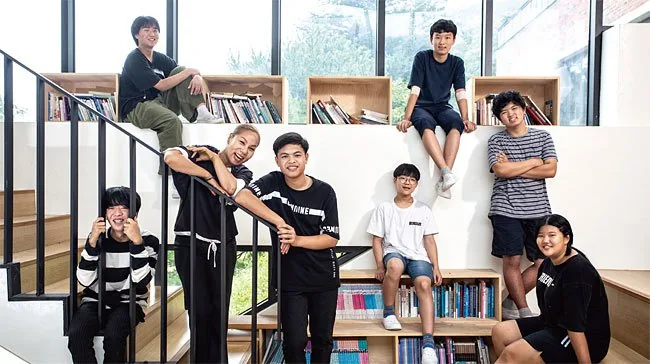
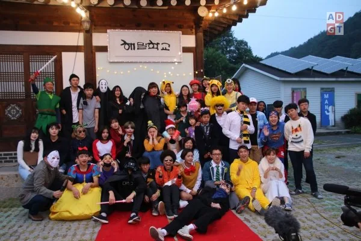
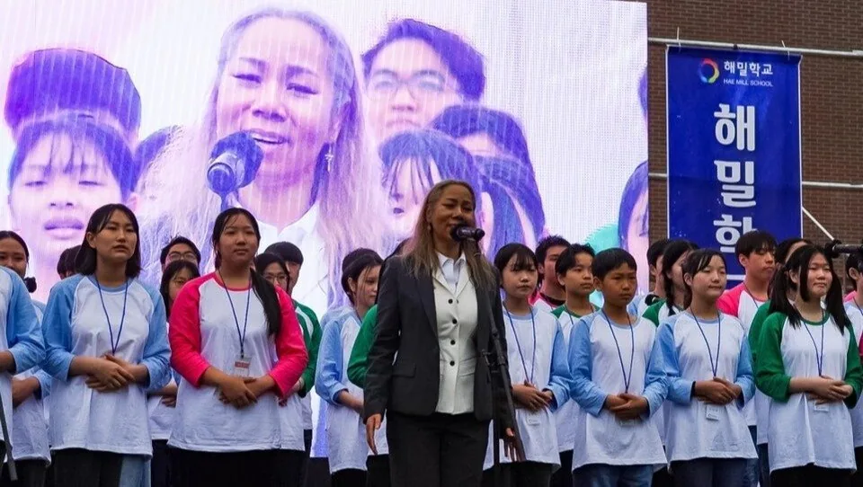

해밀학교
비 온 뒤 맑게 갠 하늘. 무대 밖에서 이어지는 또 하나의 길.






2013년, 인순이는 강원도 홍천에 다문화 가정 청소년을 위한 대안학교 해밀학교를 세웠습니다. '비 온 뒤 맑게 갠 하늘'이라는 이름처럼, 아이들이 저마다의 꿈을 활짝 펼칠 수 있도록 돕는 배움터입니다.
무대에서 받은 사랑을 무대 밖에서 돌려주는 이 여정은 인순이의 음악만큼이나 오래, 꾸준히 이어지고 있습니다. 2012년 설립된 사단법인 '인순이와 좋은 사람들'이 함께합니다.